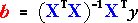
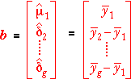
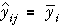

Applying the GLM theory
Having expressed the g-group model as a GLM,
we can apply standard GLM theory to find the least squares estimates of the model parameters,

Expanding this matrix with the design matrix, X, from the previous page, it can be shown that the least squares estimates are:

It is again simple to show that:
The fitted values are the sample means from the g groups.

Antibiotic effectiveness
A percentage of any antibiotic binds to blood serum proteins, reducing the effectiveness of the medication. This is of considerable pharmacological importance since increased binding reduces the systemic uptake of the drug. An experiment was conducted using bovine serum to determine the binding percentage for five common antibiotics.
- Penicillin
- Tetracycline
- Streptomycin
- Erythromycin
- Chloramphenicol
The experiment was repeated four times for each antibiotic.
To keep the design matrix X to a reasonable size below, we have only modelled the data from the first four of these antibiotics.
The following jittered dot plot shows the data. We have initially chosen Penicillin as the baseline antibiotic. The parameter µ1 denotes its mean binding percentage. The other δ parameters denote the difference between the mean binding percentages of the other antibiotics and Penicillin.
Drag the red arrows to adjust the four parameters of the model and observe how the matrix equation for the fitted values changes. Note that the four group means can be set to any values with this model.
Click Least squares to set the parameters to their least squares estimates. The fitted values are now all equal to their group mean.
Finally, use the pop-up menu to change the baseline category. Observe that although the values of the parameters change, the fitted values from the model remain the same.